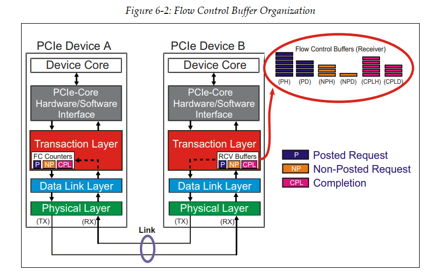
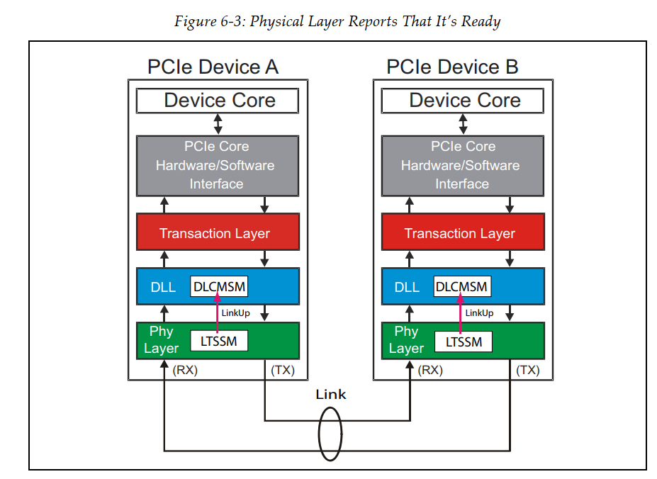
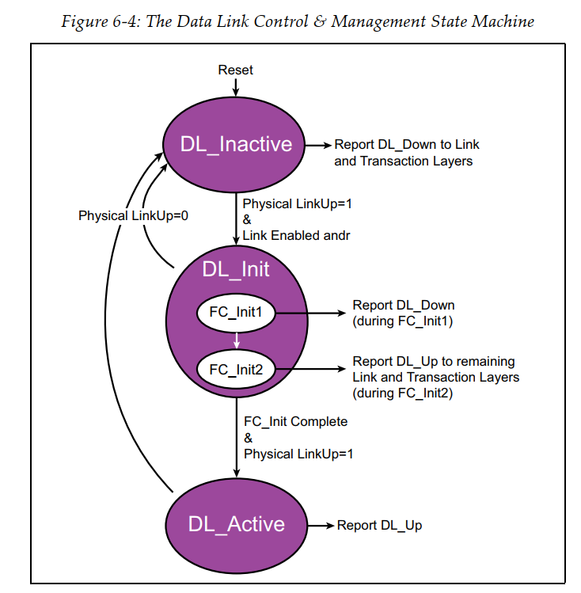
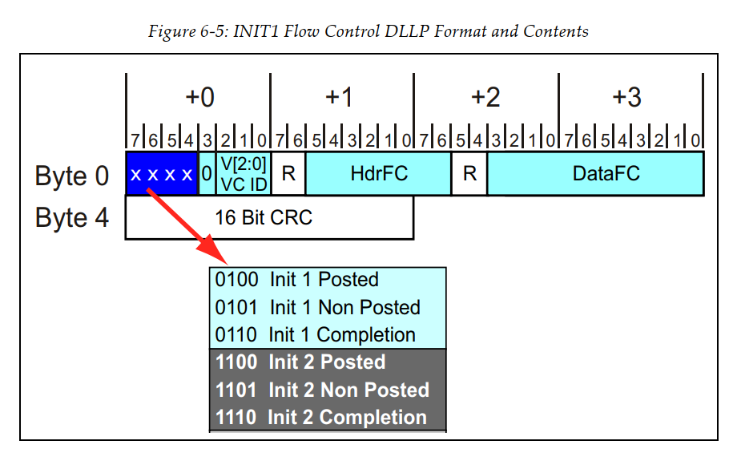
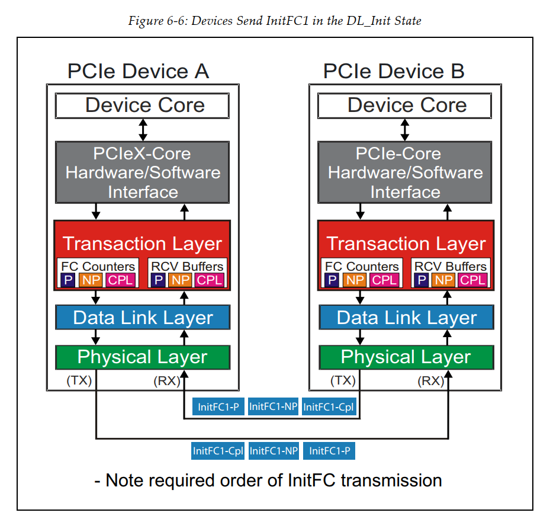
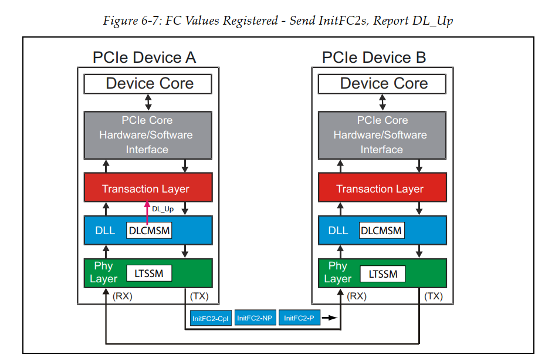
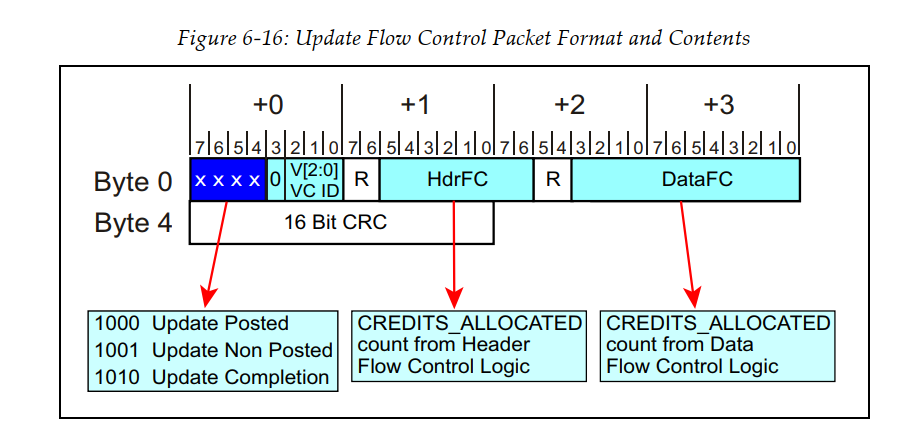

Flow Control
[toc]
为什么需要flow control
需要对端能正常接收TLP包。确保有合适的buffer接收。
为什么要DLLP层收发flow control information
避免死锁。TLP buffer 满了，又依赖TLP 包交换buffer信息。
特点
数据链路层中的信用额度管理有两个重要的特点：
- 不同处理方式是的TLP消息有着单独的信用额度管理：Posted（P），Non-Posted（NP）和Completion（Cpl）。这三种消息的信用额度是独立的，互不影响。
- 每个VC(最多8个)都有着自己的独立的信用额度管理，而不是Link。也就是说，如果一个Link上有多个VC，那么每个VC都需要单独的初始化和更新。
参与流量控制的消息有很多，主要有三类，每一类有三个变种（N/NP/Cpl），每一类里又分data和header，像read reequest 只有header，所以需要分开。
那么最多情况，8 VC x 3 types x 2 = 46 buffers

计量单位
流控制信用量Flow Control Credits (FCCs)
• Header credits — maximum header size + digest — 4 DWs for completions (16B) — 5 DWs for requests (20B) • Data credits — 4 DWs (aligned 16 bytes)
1 DW = 4 Bytes = 32 bits
初始化
如果flow control初始化未成功，那么任何TLPs都无法发送出去。
此外，Flow control的初始化过程是在物理层link training完成之后进行，此时物理层中的LinkUp信号为触发状态，也即以为这物理层已经做好准备了。
对于默认的VC，也就是VC0，由硬件完成初始化，其他的VC由软件完成初始化。

注：
DLCMSM= Data Link Control and Management State Machine;
LTSSM= Link Training and Satus State Machine;
DLCMSM状态机
- DL_Inactive: 物理层通知数据链路层当前PCIe链路不可用；
Reset操作将state machine的状态调整为DL_Inactive. 此时会向链路层以及事务层发送DL_Down信号通知此时状态；
- DL_Init: 物理层正处于链路初始化状态；
当看到物理层传来的LinkUp信号(说明物理层做好准备了), stata machine的状态进入DL_init sub-state: FC_INIT1和FC_INIT2. 这两个状态是Flow control的初始化的两个状态；
- DL_active: 当前PCIe链路层处于正常工作状态；

流控初始化就是FC_INIT1和FC_INIT2

当进入FC_INIT1阶段后，device会持续依次发送3个InitFC1 Flow Control DLLPs初始化接收端的VC buffer。
从上面消息包可以看出，hdr和data，会一起初始化。

FC_INIT1已经对Flow Control相关的缓存进行初始化，FCINIT2的作用主要是验证FC_INIT1的结果。FC_INIT2与FC_INIT1携带相同的Credit信息。
在FC_INIT2阶段时，Device会依次发送3个InitFC2 Flow Control DLLPs初始化接收端的VC buffer。成功发送完毕之后进入DL_active并回报DL_Up，告知事务层链路可以正常工作了。

流控状态更新
然后，为了保证发送方正常的消息发送，当接收方处理完部分消息后（或者一些特殊情况后），就会根据其当前缓存的大小，向发送方发送UpdateFC消息，告诉发送方，接收方的信用额度还剩下多少。另外，除了这种情况，接收方还会定时的向发送方上报自己的信用额度（最长间隔30us），这么做的原因是为了避免意外情况，如CRC校验出错，导致信用额度上报丢失，从而导致发送方停止发送消息的问题。

FC Upate的发送频率？
同样Type两个FC Upate DLLP之间最大的间隔（延时）？ 30us(-0%+50%), Extend Sync bit时 120us(-0%+50%)
FC Update 只允许发生在L0或L0s 强烈建议timeout机制，用200us(-0%~+50%)，可以被任何Init or Update FCP复位(或任何DLLP)，超时后LTSSM进入recovery后retraining Infinite credit需要disable timeout
Scaled Flow Control
最后，数据链路层还支持Scaled Flow Control，即信用额度的数量可以是2的幂次方，这样就可以管理更大的信用额度了。
PCI Express® Base Specification Revision 5.0 Version 3.4.2 Scaled Flow Control